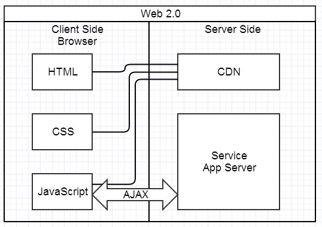
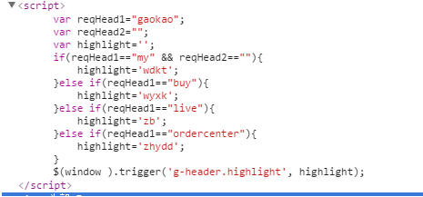

前后端分离尝试
MVC

spa
1.逻辑可以写在C也可以写在M，甚至可以写在View中
前端想获取需要高亮的参数highlight,但是后台只提供reqHead1与reqHead1的参数,当然,前端知道这三种参数之间的关联。。。
机制的利用script处理数据的能力-。-
前后端工作内容
后端：
java web工程师
前端：
开发过程
- 切图(前端)
- 接口(后端)
- 验证(前端)
- ...
理论上是并行的,更多的时候是串行的,主要问题在联调
联调其实就是。。。。
- 发现接口数据与ue不一致
- 发现需求逻辑问题
- 没有数据
- 数据错误/异常
- 。。。
联调其实就是陪加班
- 前端依赖服务端开发环境
- 依赖沟通约定/联调
- 开发过程繁琐
- 模型崩溃
前后端项目分离
前端项目:管好静态资源文件
后端项目:提供更人性化的模型/api
以证明可以实现的开发模式(单页面情况)
- 后台提供接口名与返回数据的模型(后端比前端更熟悉业务模型)
- 前端根据后台提供的模型创建mock,并确保能够通过url获取mock(各种拦截技术)
- 前端切图...此时已可以通过接口(mock)获取数据
- 前端组织逻辑并检验业务逻辑，模型的准确性
- 后端码代码
- 接口测试
- 取消链接,联调,主要测试传参以及业务连贯性
全局分析-->模块化处理
nginx,postman